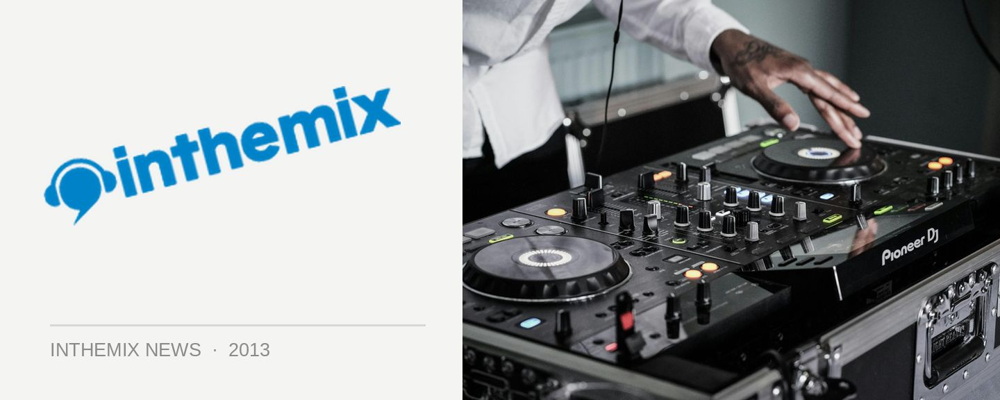

Watch: Ultra Europe's live stream schedule
After Ultra Music Festival staged its biggest ever party in Miami back in March, it’s expanding continents this weekend and staging a takeover of Croatian city of Split for the first ever Ultra Europe event. While inthemix will be there to bring you all the live updates over the three days, you’ll also be able to check it out yourself at UMF TV no matter where you are in the world, thanks to the wonders of live streaming technology.
Ultra Europe has just revealed its star-studded live stream line-up for the Friday event, with announcements for the remaining two days expected shortly…
SATURDAY SCHEDULE
10:30pm Reboot
12-midnight Afrojack
1:30am Armin van Buuren
3:30am Hardwell
4am Carl Cox
FRIDAY SCHEDULE
10:30pm Porter Robinson
12:00 midnight Adam Beyer
1am Fedde Le Grand
2am Luciano
3am Avicii
4:40am Nicky Romero
SATURDAY STREAM:
FRIDAY STREAM:
The live stream will be bringing you sets from both stages of Ultra Europe over the weekend: from the spectacular main stage, with headliners like Nicky Romero, Porter Robinson and Fedde Le Grand on Friday, as well as the Carl Cox & Frends Arena that will showcase sets from house and techno heavies like Adam Beyer, Luciano and the big man himself.
The organisers have promised the authentic Ultra experience this weekend, though it’s the setting that is just as much the star of Ultra Europe. With the party now in full swing at the Poljud Stadium in Split, the view from all sides is of the spectacular Croatian mountains. On Sunday the event hops over to on the island of Hvar for a ‘beach party’ headlined by Ultra regular Steve Aoki, which should amp up the Mediterranean vibes even further.
Stay tuned to inthemix for Ultra Europe updates over the weekend.